Mexico & Margaritaville
February 2026

In February 2026 I took a cruise that was supposed to be a guys trip. It turned into a solo cruise. I made the best of it and had fun.
Shore days took me to Mayan ruins and to Mucuyché, with time on the ship in between.


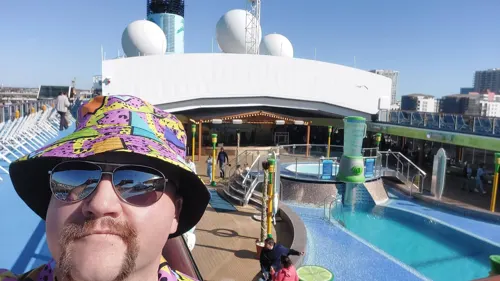

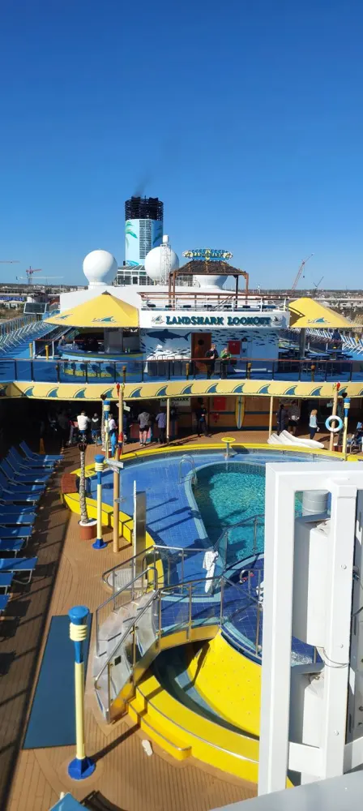

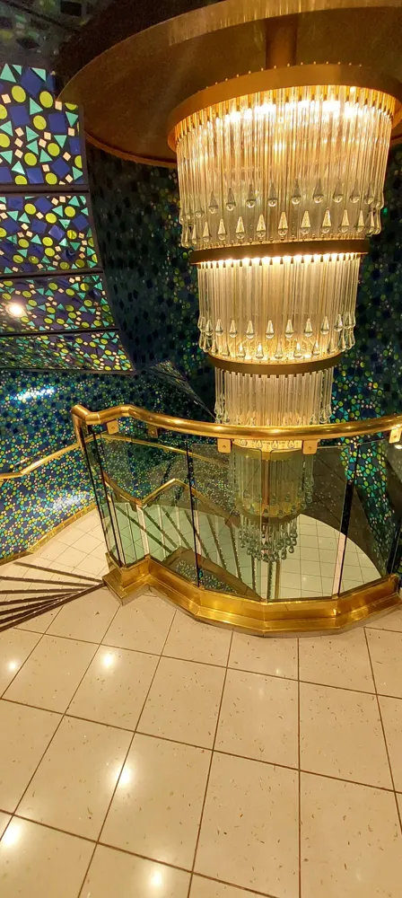

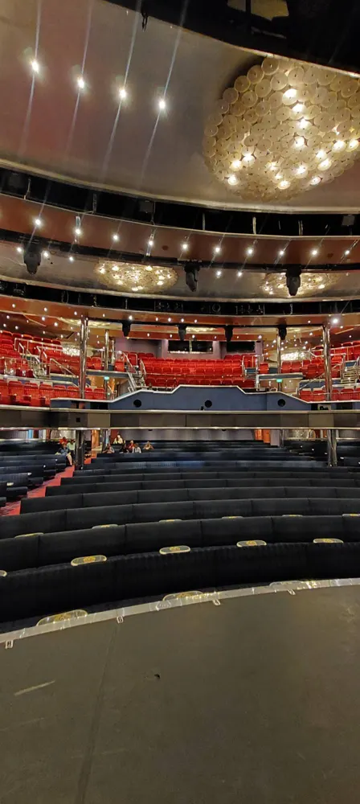

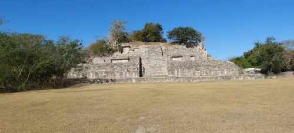

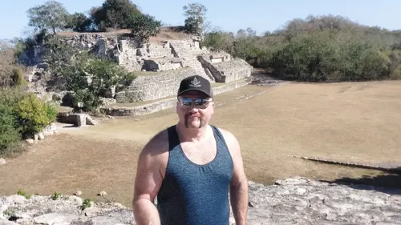

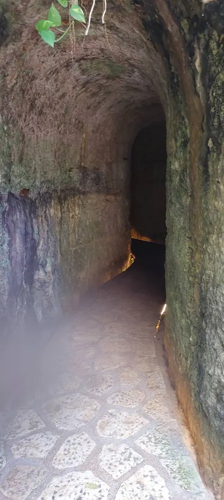

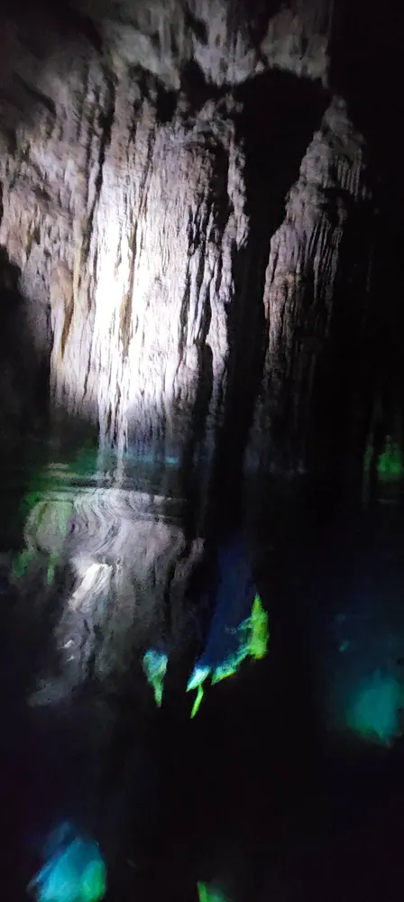

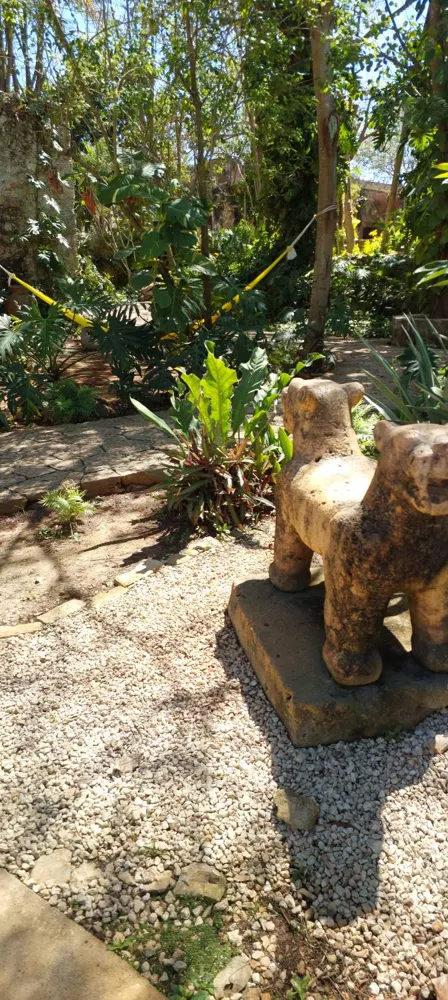

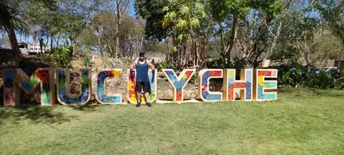

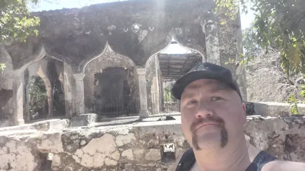

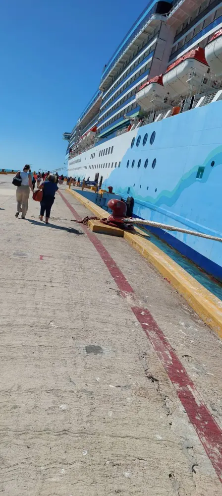